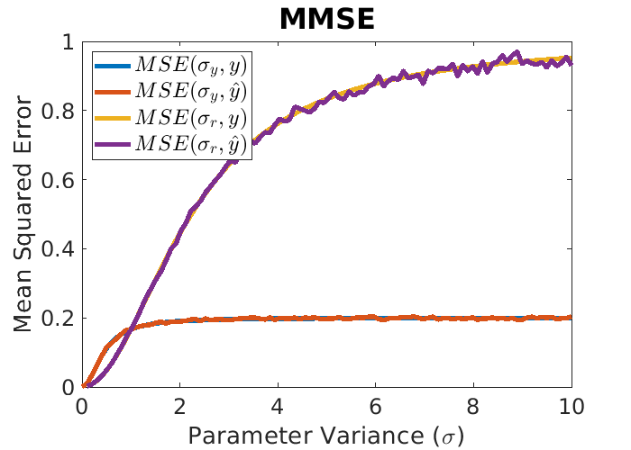

Bayse and Linear MMSE Estimators
Nikita Teplitskiy, Dan Brody, and I-an Huang
Contents
Scenario 2
Scenario 2: Implement the linear estimator for multiple noisy observations, similar to example 8.8 from the notes. Extend this example so that it works for an arbitrary number of observations. Use Gaussian random variables for Y and R. Set μy = 1. Experiment with a few different variances for both Y and R. On one plot, show the mean squared error of your simulation compared to the theoretical values for at least 2 different pairs of variances.
clearvars close all M = 1e4; %M=5 sig = linspace(0,10); n = 5; mmse = @(x1,x2) mean((x1-x2).^2);
Eyy = []; Eyyhat = []; for i = sig [Y,R] = gen_data(i, 1, n, M); X = Y + R; a = get_coeff(i, 1, n); Eyy = [Eyy ; get_MMSE(i, a)]; y = 1 + sum((X-1) .* a); Eyyhat = [Eyyhat ; mmse(Y,y)]; end
Ery = []; Eryhat = []; for i = sig [Y,R] = gen_data(1, i, n, M); X = Y + R; a = get_coeff(1, i, n); Ery = [Ery ; get_MMSE(1, a)]; y = 1 + sum((X-1) .* a); Eryhat = [Eryhat ; mean((Y - y).^2)]; end plot(sig, [Eyy,Eyyhat,Ery,Eryhat], 'LineWidth',4) ylabel('Mean Squared Error') xlabel('Parameter Variance (\sigma)') set(gcf,'Position',[100 100 700 500]) set(gca,'FontSize',18) title('MMSE', 'FontSize', 24); legend({'$MSE(\sigma_y,y)$','$MSE(\sigma_y,\hat{y})$', ... '$MSE(\sigma_r,y)$','$MSE(\sigma_r,\hat{y})$'}, ... 'Interpreter','latex', 'FontSize', 18, 'Location', 'northwest'); % plot MMSE of MMSE? % assuming sig is the same for all R? function a = get_coeff(sigY, sigR, nR) % R doesn't have to be equal variance for this method C = zeros(nR) + sigY^2; % populate matrix with var(Y) C(1:nR+1:end) = sigY^2 + sigR^2; % populate diagonal with var(Xi) a = inv(C) * (ones(nR,1) * sigY^2); % compute coefficients % Cxy/Cxx is better? end function E = get_MMSE(sigY, a) % This is the correct function for arbitrary number of R % see 8.73 for detail E = sigY^2 - sum(sigY^2 * a); end function [Y,R] = gen_data(sig_Y, sig_R, n, M) Y = 1 + sig_Y * randn(1,M); R = sig_R * randn(n,M); end
Warning: Matrix is singular to working precision.